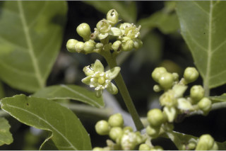
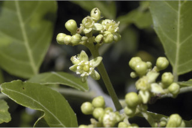

Images :


 

| Habit : | Small trees up to 4 m tall. |
| Leaves : | Leaves compound , imparipinnate , alternate , spiral ; rachis terete , pulvinate , glabrescent when young; petiolule 0.3-0.5 cm long; leaflets 7-13, alternate , 2.5-6.5 x 1.7-3.5 cm, ovate to elliptic with unequal sides, apex acuminate with retuse tip, base asymmetric , margin crenulate , glabrous ; secondary_nerves 5-8 pairs; tertiary_nerves broadly reticulate to obscure . |
| Inflorescence / Flower : | N/A |
| Fruit and Seed : | N/A |